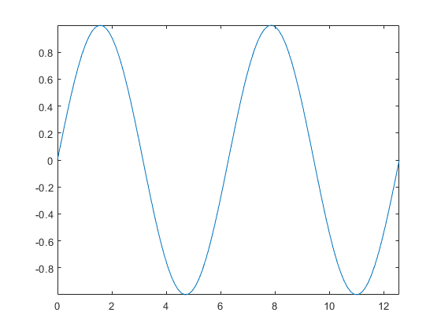

Hw2
劉弘祥 106022103 2018/11/30~12/6
Contents
以上分別為各問題的code
以下為測試用程式主體：
function []= test_code_hw2() clear all; test_1(); test_2(); test_3(); test_4(); test_5(); test_6(); test_7(); test_8(); end
3-2-11
請使用 MATLAB 的兩個指令，分別在平面 上畫出螺旋圖，從原點開始，逐漸向外繞圈擴散，
以下為spiral函式
function graph=spiral(r,c) % 產生螺旋線圈的函式 % r表示從原點開始到最後走的長度 % c表示走的圈數 % no return a=linspace(0,r,1000); b=linspace(0,2*pi*c,1000); graph=polar(b,a); end
以下為測試用函式
function []= test_1() fprintf('Here is the demo for problem：%s .\n','3-2-11'); r=[1 3];%距離，可根據需求修改，長度自適應 c=[2 6 10];%圈數，可根據需求修改，長度自適應 for i=1:length(r) for j=1:length(c) disp('輸入為:'); fprintf('從0到%f長，走%f圈\n',r(i),c(j)); subplot(length(r),length(c),(i-1)*length(c)+j); spiral(r(i),c(j)); end end end
Here is the demo for problem：3-2-11 . 輸入為: 從0到1.000000長，走2.000000圈 輸入為: 從0到1.000000長，走6.000000圈 輸入為: 從0到1.000000長，走10.000000圈 輸入為: 從0到3.000000長，走2.000000圈 輸入為: 從0到3.000000長，走6.000000圈 輸入為: 從0到3.000000長，走10.000000圈
3-2-12 (a)
試寫一函數 regGeneralStar(n, k)， 其功能為畫出一個圓心在 (0, 0)、半 徑為 1 的圓，並在圓內畫出一個內接星 形，其中一頂點位於 1+0*i（複數表示法 ），下一頂點則位於 exp(i*2*pi*k/n)，依 此類推。
以下為regGeneralStar函式
function graph=regGeneralStar(n,k) % 繪製一個圓心在（0，0），半徑為1的圓 % 並在圓內部畫一個內接星形 plot(1,1); hold on; Q=linspace(0,2*pi,200);%建立0到2pi的數據 plot(cos(Q),sin(Q));%繪製單位圓 for i=1:n R(i)=2*pi*k/n*i; %建立角度序列 長度n end plot(cos(R),sin(R)); %繪製星星 hold off; end
以下為測試用函式
function []= test_2() subplot(1,1,1); fprintf('Here is the demo for problem：%s .\n','3-2-12-a'); sample=[11,3]; fprintf('regGeneralStar(%d,%d),結果如下',sample(1),sample(2)); regGeneralStar(sample(1),sample(2)); end
Here is the demo for problem：3-2-12-a . regGeneralStar(11,3),結果如下
3-2-12 (b)
承上，呼叫regGeneralStar(79,i)從1到1000，並製作成GIF
以下為製作GIF檔程式
for j=1:1000 figure(j) regGeneralStar(79, j); title('3-12(b) 劉弘祥'); hold on; frames(j)=getframe(gcf); %以getframe將每次的圖存進frames中 close all; end dt=0.1; %設定每張圖的時間間隔，單位為秒 % 下方開始將每個獲取到的frame轉成影像，並寫一個一個的存進檔名為 move_pic_3_12_b.gif 的檔案中 for i=1:1000 [image,map]=frame2im(frames(i)); [im,map2]=rgb2ind(image,128); if i==1 imwrite(im,map2,'move_pic_3_12_b.gif','gif','writeMode','overwrite','delaytime',dt,'loopcount',inf); else imwrite(im,map2,'move_pic_3_12_b.gif','gif','writeMode','append','delaytime',dt); end end
結果輸出（因檔案過大故上傳連接）： 106022103-3-2-12-b
4-2-2
Use two MATLAB statements (or less) to plot a simple spiral of radius 1 along the x-axis in a 3D space. The plot you generated should be as close as possible to the one shown next.
因為題目要求2行內做出來，所以就不另外寫function了 程式如下，一行完成
function []=test_3() plot3(1:0.01:12*pi,cos(1:0.01:12*pi),sin(1:0.01:12*pi)) end
4-2-7
Create a plot of dome，使用 cylinder 和 colorbar
因為無可調整輸入變數，故不另外寫function。 程式如下：
function []=test_4() hold off; [x,y,z]=sphere;%製作一個球 x=x(11:end,:);%取其上半 y=y(11:end,:);% z=z(11:end,:)+1;% surf(x,y,z)%繪製半球 hold on; cylinder%繪製圓柱 colorbar; hold off; end
5-6
假設有一圓球半徑為1，圓心在 (0,0,0) ,試畫出此圓球的上半部網狀圖，並將其30 條等高線同時畫在曲面的下方。
因為無可調整輸入變數，故不另外寫function。 程式如下：
function []=test_5() [x,y,z]=sphere; x=x(11:end,:); y=y(11:end,:); z=z(11:end,:); %因為在同一個圖放兩張的圖片的時候不易觀察，故分開繪製 subplot(1,2,1);mesh(x,y,z); title('半球'); subplot(1,2,2);meshc(x,y,z,30); title('等高線'); end
6-2-2
以物件方式產生動畫，呈現一個小圓（半徑為 1） 在一個大圓（半徑為 5）的圓周外部滾動的動畫， 並畫出小圓圓周任一點所形成的「外部花瓣線」。
以下為Hypocycloid函式
function Hypocycloid(R,r) q=linspace(0,2*pi); N=r/gcd(r,R); plot(R*cos(q),R*sin(q));%draw the big circle title('106022103'); axis([-1.5*(R+r) 1.5*(R+r) -1.5*(R+r) 1.5*(R+r)]);%讓圖在範圍內 hold on; %%make the small circle x=r*cos(q); y=r*sin(q); h=plot(x,y,'EraseMode','xor'); % m=0; n=0; g=plot(m,n,'EraseMode','xor'); for i=0:1000 %動圓 a=x+(R+r)*cos(2*pi/1000*i*N); b=y+(R+r)*sin(2*pi/1000*i*N); set(h,'xdata',a,'ydata',b); %花瓣線 m=(R+r)*cos(q*i/1000*N)+r*cos((R)/r*q*i/1000*N); n=(R+r)*sin(q*i/1000*N)+r*sin((R)/r*q*i/1000*N); set(g,'xdata',m,'ydata',n); drawnow;%繪圖 end end
以下為測試用函式
function []=test_6() subplot(1,2,1); Hypocycloid(3,1); title('R=3,r=1'); subplot(1,2,2); Hypocycloid(5,1); title('R=5,r=1'); clean(1000); end
6-2-5
粒子碰撞動畫: 三個圓圈（半徑為1）在一個邊長為 10 的方形內進行碰撞，假設這三個圓圈的速度一樣（都是 每秒10單位），質量也一樣，但運動方向及開始位置都是 由亂數產生
因程式較複雜，故暫不另外設定function 結果輸出（因檔案過大故上傳連接）： 106022103-6-2-5
function[]=test_7() subplot(1,1,1); title('粒子碰撞 106022103'); %三個圓圈 %位置（x,y) %速度 (Vx,Vy) x1=1+8*rand; y1=1+8*rand; while(1) x2=1+8*rand; y2=1+8*rand; if( ( (x1-x2)^2 + (y1-y2)^2 )>1 ) break; end end while(1) x3=1+8*rand; y3=1+8*rand; if( ( (x1-x3)^2 + (y1-y3)^2 )>1 & ((x2-x3)^2 + (y2-y3)^2 )>1 ) break; end end Vx1=rand;Vy1=rand; Vx2=2*rand;Vy2=2*rand; Vx3=rand;Vy3=rand; axis([0 10 0 10]); % fprintf('1:%f %f / %f %f\n2:%f %f / %f %f\n3:%f %f / %f %f\n',x1,y1,Vx1,Vy1,x2,y2,Vx2,Vy2,x3,y3,Vx3,Vy3); tspan=0.15; hold on; g1=plot(x1,y1,'B:.','EraseMode','xor'); set(g1,'MarkerSize',15); g2=plot(x2,y2,'G:.','EraseMode','xor'); set(g2,'MarkerSize',15); g3=plot(x3,y3,'k:.','EraseMode','xor'); set(g3,'MarkerSize',15); for i=1:256 x1=x1+Vx1*tspan;y1=y1+Vy1*tspan; x2=x1+Vx2*tspan;y2=y2+Vy2*tspan; x3=x1+Vx3*tspan;y3=y3+Vy3*tspan; %處理邊界1 if(x1>=9) Vx1=-abs(Vx1);end if(y1>=9) Vy1=-abs(Vy1);end if(x1<=1) Vx1=abs(Vx1);end if(y1<=1) Vy1=abs(Vy1);end %處理邊界2 if(x2>=9) Vx2=-abs(Vx2);end if(y2>=9) Vy2=-abs(Vy2);end if(x2<=1) Vx2=abs(Vx2);end if(y2<=1) Vy2=abs(Vy2);end %處理邊界3 if(x3>=9) Vx3=-abs(Vx3);end if(y3>=9) Vy3=-abs(Vy3);end if(x3<=1) Vx3=abs(Vx3);end if(y3<=1) Vy3=abs(Vy3);end %處理碰撞1 2 if( ( (x1-x2)^2 + (y1-y2)^2 )<=1 ) normal_vector=[x2 y2]-[x1 y1]; unit_normal_vector = normal_vector./norm(normal_vector); unit_tangent_vector=[-unit_normal_vector(2) unit_normal_vector(1)]; V1n=dot(unit_normal_vector,[Vx2 Vy2])*unit_normal_vector; V1t=dot(unit_tangent_vector,[Vx1 Vy1])*unit_tangent_vector; V2n=dot(unit_normal_vector,[Vx1 Vy1])*unit_normal_vector; V2t=dot(unit_tangent_vector,[Vx2 Vy2])*unit_tangent_vector; Vx1=V1n(1)+V1t(1); Vy1=V1n(2)+V1t(2); Vx2=V2n(1)+V2t(1); Vy2=V2n(2)+V2t(2); x1=x1+Vx1*tspan;y1=y1+Vy1*tspan; x2=x1+Vx2*tspan;y2=y2+Vy2*tspan; end %處理碰撞1 3 if( ( (x1-x3)^2 + (y1-y3)^2 )<=1 ) normal_vector=[x3 y3]-[x1 y1]; unit_normal_vector = normal_vector./norm(normal_vector); unit_tangent_vector=[-unit_normal_vector(2) unit_normal_vector(1)]; V1n=dot(unit_normal_vector,[Vx3 Vy3])*unit_normal_vector; V1t=dot(unit_tangent_vector,[Vx1 Vy1])*unit_tangent_vector; V3n=dot(unit_normal_vector,[Vx1 Vy1])*unit_normal_vector; V3t=dot(unit_tangent_vector,[Vx3 Vy3])*unit_tangent_vector; Vx1=V1n(1)+V1t(1); Vy1=V1n(2)+V1t(2); Vx3=V3n(1)+V3t(1); Vy3=V3n(2)+V3t(2); x1=x1+Vx1*tspan;y1=y1+Vy1*tspan; x3=x1+Vx3*tspan;y3=y3+Vy3*tspan; end %處理碰撞2 3 if( ( (x3-x2)^2 + (y3-y2)^2 )<=1 ) normal_vector=[x2 y2]-[x3 y3]; unit_normal_vector = normal_vector./norm(normal_vector); unit_tangent_vector=[-unit_normal_vector(2) unit_normal_vector(1)]; V3n=dot(unit_normal_vector,[Vx2 Vy2])*unit_normal_vector; V3t=dot(unit_tangent_vector,[Vx3 Vy3])*unit_tangent_vector; V2n=dot(unit_normal_vector,[Vx3 Vy3])*unit_normal_vector; V2t=dot(unit_tangent_vector,[Vx2 Vy2])*unit_tangent_vector; Vx3=V3n(1)+V3t(1); Vy3=V3n(2)+V3t(2); Vx2=V2n(1)+V2t(1); Vy2=V2n(2)+V2t(2); x3=x3+Vx3*tspan;y3=y3+Vy3*tspan; x2=x3+Vx2*tspan;y2=y2+Vy2*tspan; end set(g1,'xdata',x1,'ydata',y1); set(g2,'xdata',x2,'ydata',y2); set(g3,'xdata',x3,'ydata',y3); drawnow; frames(i)=getframe(gcf); end %輸出gif圖 dt=0.1 for i=1:256 [image,map]=frame2im(frames(i)); [im,map2]=rgb2ind(image,128); if i==1 imwrite(im,map2,'move_pic_6_2_5.gif','gif','writeMode','overwrite','delaytime',dt,'loopcount',inf); else imwrite(im,map2,'move_pic_6_2_5.gif','gif','writeMode','append','delaytime',dt); end end end
Warning: The EraseMode property is no
longer supported and will error in a
future release.
Warning: The EraseMode property is no
longer supported and will error in a
future release.
Warning: The EraseMode property is no
longer supported and will error in a
future release.
Warning: The EraseMode property is no
longer supported and will error in a
future release.
Warning: The EraseMode property is no
longer supported and will error in a
future release.
Warning: The EraseMode property is no
longer supported and will error in a
future release.
dt =
0.1000
7-1-1
Display the nearest point: 請寫一個函數 showNearestPoint.m，可畫出 y=sin(x) 的圖形,其中 x 的範圍是 0 到 4*pi。當滑鼠在圖軸內點選時，你的程式 應能顯示最近的資料點，並將此資料點的座標顯示在 MATLAB 命令視窗內。 以下為showNearestPoint函式
function showNearestPoint(action) if nargin<1, action='start'; end switch(action) case 'start' % 開啟圖形視窗 set(gcf, 'WindowButtonDownFcn', 'showNearestPoint down'); q=linspace(0,4*pi); hold off; plot(q,sin(q)); axis([-inf inf -inf inf]); case 'down' % 設定滑鼠移動時的反應指令為「showNearestPoint move」 set(gcf, 'WindowButtonMotionFcn', 'showNearestPoint move'); % 設定滑鼠按鈕被釋放時的反應指令為「showNearestPoint up」 set(gcf, 'WindowButtonUpFcn', 'showNearestPoint up'); C=get(gca,'CurrentPoint');%取得滑鼠座標 d=1000;%設定一很大的初始距離作為判斷標準 q=linspace(0,4*pi,1000); %以下判斷最近點 for i=1:1000 if(((q(i)-C(1))^2+(sin(q(i))-C(3))^2)<d^2) d=sqrt((q(i)-C(1))^2+(sin(q(i))-C(3))^2); x=q(i); y=sin(q(i)); end end %繪製最近點 hold on; plot(x,y,'x'); hold off; %顯示文字 fprintf('滑鼠位置為：%f %f\n最近點為：%f %f\n\n',C(1),C(3),x,y); end
以下為測試用函式
function test_8() showNearestPoint(); end